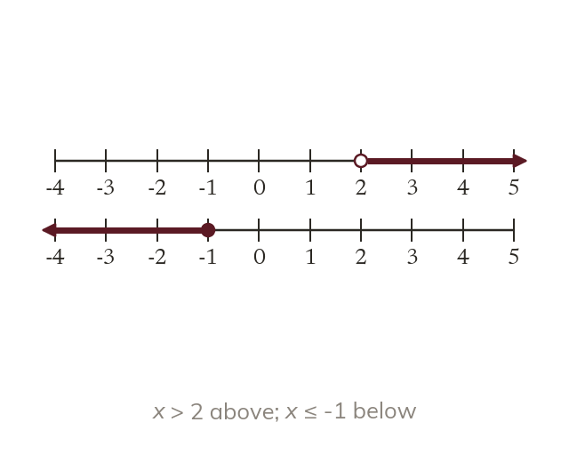

Open or filled
An open circle marks a value that is not included. A filled circle marks one that is. An arrow shows the set carries on.
An open circle marks a value that is not included, and a filled circle one that is. An arrow shows that the set carries on.